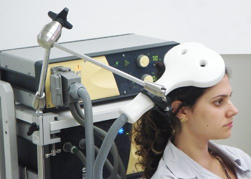

Qué es
La neuromodulación no invasiva agrupa técnicas que modifican la actividad del cerebro o de los nervios desde fuera del cuerpo, sin cirugía, mediante campos magnéticos, corrientes eléctricas débiles o ultrasonidos. Aprovechan la plasticidad cerebral: repetidas en varias sesiones, pueden producir cambios duraderos en los circuitos.
Estimulación magnética transcraneal
Una bobina colocada sobre la cabeza genera pulsos magnéticos que inducen pequeñas corrientes en la corteza cerebral. En su forma repetitiva (EMTr) puede aumentar o disminuir la actividad de la zona estimulada.
- Depresión resistente: es su uso más establecido. Se aplica sobre la corteza prefrontal izquierda en sesiones diarias durante varias semanas. Los protocolos acelerados (como el de estimulación theta intermitente) reducen el tratamiento a pocos días.
- Migraña con aura: un dispositivo portátil de pulso único para las crisis.
- Trastorno obsesivo-compulsivo y deshabituación del tabaco: aprobada en EE. UU.
- En investigación: rehabilitación tras un ictus, dolor neuropático, acúfenos, alucinaciones.
- También se usa para diagnóstico: mide la excitabilidad de la vía motora y localiza zonas del lenguaje antes de una cirugía.
Es bien tolerada; puede producir dolor de cabeza o molestias en el cuero cabelludo, y raramente una crisis epiléptica.
Estimulación transcraneal por corriente continua
Aplica una corriente eléctrica muy débil (1-2 miliamperios) mediante electrodos en el cuero cabelludo. Es barata y portátil. Se estudia en la depresión, la rehabilitación del lenguaje y el movimiento tras un ictus, el dolor crónico y el deterioro cognitivo, con resultados prometedores pero todavía variables.
Estimulación de nervios periféricos y craneales
- Estimulación no invasiva del nervio vago con un dispositivo en el cuello: para la cefalea en racimos y la migraña.
- Estimulación del nervio supraorbitario (en la frente) para la migraña.
- Neuromodulación eléctrica remota con un dispositivo en el brazo, controlado por el móvil, para las crisis de migraña.
- Estimulación eléctrica transcutánea (TENS) para algunos dolores.
- Estimulación transcutánea de la médula espinal, que en 2024 mejoró la función de la mano en personas con lesión medular cervical.
Ver tratamientos de la migraña.
Ultrasonidos focalizados
Los ultrasonidos focalizados de alta intensidad guiados por resonancia permiten crear una lesión muy precisa en el interior del cerebro sin abrir el cráneo: se usan en el temblor esencial y el párkinson. A baja intensidad, se investigan para modular circuitos y para abrir temporalmente la barrera hematoencefálica y que lleguen fármacos al cerebro.
Terapia electroconvulsiva
Aunque se aplica con anestesia y provoca una crisis controlada, la terapia electroconvulsiva es también una forma de neuromodulación, y sigue siendo el tratamiento más eficaz para la depresión grave resistente.
Fuentes
- Lefaucheur JP, et al. Evidence-based guidelines on the therapeutic use of repetitive transcranial magnetic stimulation (rTMS): an update (2014-2018). Clin Neurophysiol. 2020;131:474-528.
- Cole EJ, et al. Stanford Neuromodulation Therapy (SNT): a double-blind randomized controlled trial. Am J Psychiatry. 2022;179:132-41.
- Fregni F, et al. Evidence-based guidelines and secondary meta-analysis for the use of transcranial direct current stimulation in neurological and psychiatric disorders. Int J Neuropsychopharmacol. 2021;24:256-313.
- Moritz C, et al. Non-invasive spinal cord electrical stimulation for arm and hand function in chronic tetraplegia. Nat Med. 2024;30:1276-83.